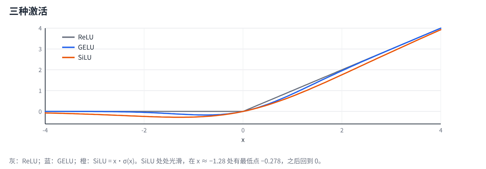
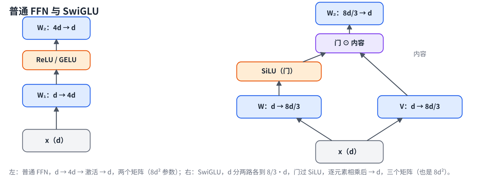
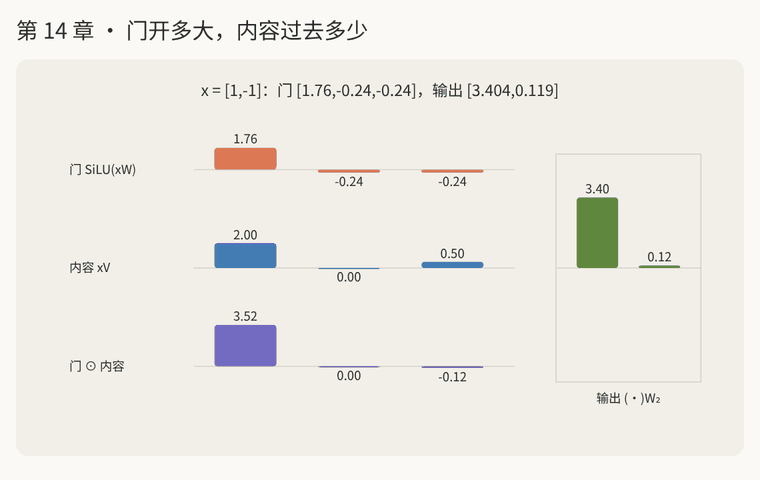

第 14 章 · SwiGLU：门控为什么有用，8/3 怎么保住参数量
本地运行
git clone https://github.com/wikieden/beyond-transformer
cd beyond-transformer/code/notebooks
pip install jupyterlab torch numpy
jupyter lab ch14_swiglu.ipynb也可以下载后直接用 VS Code 打开 .ipynb 运行。需要 GPU 的章节在 Colab 里选「代码执行程序 → 更改运行时类型 → GPU」。
本章回答：前作的 FFN 是“放大 4 倍、过 ReLU、缩回来”。现在的大模型几乎都换成了 SwiGLU：多了一个“门”，激活函数也换成了 SiLU。门 × 内容是什么意思？SiLU 和 ReLU、GELU 差在哪？三个矩阵比两个多了一个，为什么中间层取 8/3·d 就能和原来的参数一样多？
讲解日期：2026-11-26 · 上一章：第 13 章 RMSNorm · 下一章：第 15 章 RoPE
对应原文：GLU Variants Improve Transformertransformer-deep-dive/materials/text/papers/glu-variants-2002.05202.txt式 (5)–(6) L55–L75（ReGLU、GEGLU、SwiGLU；三个矩阵时 d_ff 缩小到 2/3）、Table 1 L93–L119；CS336 a1 handout §3.5.2 L1035–L1062（式 6 GLU、式 7 SwiGLU、d_ff = 8/3·d_model；“divine benevolence”）、§7.3 swiglu_ablation L2105–L2125（d_ff 取 64 的倍数）
本章缩写：FFN = Feed-Forward Network（前馈网络）；GLU = Gated Linear Unit（门控 / 线性 / 单元）；SiLU = Sigmoid Linear Unit（sigmoid 线性单元：x·σ(x)，也叫 Swish₁）；Swish（一种激活函数，x·σ(βx)）；SwiGLU = Swish + GLU；GELU = Gaussian Error Linear Unit；σ = sigmoid（1/(1 + e^{−x})）；⊙ = 逐元素相乘；d_ff = FFN 中间层宽度。全部缩写见 附录 · 缩写与术语表
讲解
第一步：SiLU：平滑的 ReLU（2026-11-26）
类比：水龙头。 ReLU 是开关式的：负数全关、正数全开；SiLU 是旋钮式的：越往正越开，负数那边不是一下关死，而是先往下有一点再慢慢回到 0。
数字演示：
| x | −3 | −1 | 0 | 1 | 3 |
|---|---|---|---|---|---|
| ReLU | 0 | 0 | 0 | 1 | 3 |
| GELU | −0.0036 | −0.1588 | 0 | 0.8412 | 2.9964 |
| SiLU | −0.1423 | −0.2689 | 0 | 0.7311 | 2.8577 |
SiLU 处处可导（在 0 处不像 ReLU 那样有个折角），负半轴有一点小的负值，大的正数时接近 x。GELU 形状很像，BERT、GPT-2 用它。

图 14-1 · ReLU（灰）、GELU（蓝）、SiLU（橙）在 [−4, 4] 上。SiLU 在 x ≈ −1.28 处有一个最低点 −0.278，之后回到 0一句话：SiLU = x·σ(x)，是一个平滑、负半轴略低于 0 的 ReLU。
第二步：门 × 内容（2026-11-26）
类比：音量旋钮 × 歌曲。 普通 FFN 只有一路：输入放大、过激活、缩回来。GLU 分两路：一路算“内容”（xV），一路算“门”（激活后的 xW），两路逐元素相乘，门在 0 附近的维度就把内容关掉。
GLU 论文式 (6)（L68–L72）、a1 式 7（L1043–L1046）：
| 矩阵 | 形状 | 作用 |
|---|---|---|
| W | d × d_ff | 算门 |
| V | d × d_ff | 算内容 |
| W₂ | d_ff × d | 缩回 d |
数字演示（d = 2、d_ff = 3；x = [1, −1]）：
| 量 | 值 |
|---|---|
| xW | [2, −2, −2] |
| 门 SiLU(xW) | [1.7616, −0.2384, −0.2384] |
| 内容 xV | [2, 0, 0.5] |
| 门 ⊙ 内容 | [3.5232, 0, −0.1192] |
| 乘 W₂ 后的输出 | [3.404, 0.1192] |
第 1 维门大开（1.76），内容 2 被放大成 3.52；第 2、3 维门几乎关着（−0.24），内容基本被压掉。门和内容都由输入决定，所以这是一种“输入自己决定哪些特征通过”的乘法交互，比单一激活多了二次的项（xW 和 xV 相乘）。
为什么有用？论文给的是实验结果（Table 1：同样参数量下 GEGLU、SwiGLU 困惑度最低，L102–L119），解释只有一句很有名的话（a1 L1052–L1053 引用）：“我们不解释这些结构为什么好用，归功于神的恩典”。
一句话：SwiGLU 用一路 SiLU(xW) 当门、一路 xV 当内容，逐元素相乘再乘 W₂；输入自己决定哪些维度通过。
第三步：三个矩阵，为什么 d_ff 取 8/3·d（2026-11-26）
普通 FFN 两个矩阵，d_ff = 4d，参数 2·d·4d = 8d²。SwiGLU 三个矩阵，参数 3·d·d_ff。要相等：
就是论文说的“把 d_ff 缩到 2/3”（L74–L77）。计算量也一样，因为 FFN 的 FLOPs 和参数成正比（第 8 章）。
实际取整：8/3·d 一般不是整数，a1 要求取到 64 的倍数（L2112–L2114），让矩阵的形状对齐 GPU 的 tensor core。
| d | 普通 FFN（d_ff = 4d）参数 | SwiGLU 的 d_ff | SwiGLU 参数 |
|---|---|---|---|
| 512 | 2,097,152 | 1408（8/3·512 = 1365.3，取 64 倍数） | 2,162,688 |
| 768 | 4,718,592 | 2048（正好） | 4,718,592 |
| 4096 | 134,217,728 | 10944 | 134,479,872 |
LLaMA-7B（d = 4096）用的是 11008，是按 256 的倍数取整的，所以和这里差一点。

图 14-2 · 左：普通 FFN，d → 4d → 激活 → d，两个矩阵；右：SwiGLU，d 分两路各到 8/3·d（门过 SiLU），逐元素相乘后 → d，三个矩阵。两边参数量相同场景代码：LLaMA 式的 SwiGLU（真实写法，变量名照 Hugging Face 的 LlamaMLP；本书 chapter-code 只用 NumPy，这段没跑过）：
class SwiGLU(nn.Module):
def __init__(self, d, d_ff):
super().__init__()
self.gate_proj = nn.Linear(d, d_ff, bias=False) # W
self.up_proj = nn.Linear(d, d_ff, bias=False) # V
self.down_proj = nn.Linear(d_ff, d, bias=False) # W₂
def forward(self, x):
return self.down_proj(F.silu(self.gate_proj(x)) * self.up_proj(x))
a1 要你自己实现这个模块（positionwise_feedforward），并在参数量对齐的情况下和不带门的 SiLU FFN 比一比（swiglu_ablation）。
一句话：SwiGLU 有三个矩阵，中间层取 8/3·d（实际再取整到 64 或 256 的倍数），参数量和计算量就和 d_ff = 4d 的普通 FFN 一样。
动画演示：门开多大，内容过去多少

可交互版：animations/14-swiglu.html（滑块：输入 x 的两个分量）。
怎么看：
- 上排三根柱子是门 SiLU(xW)，中排是内容 xV，下排是两者相乘（第二步）；
- 拖动输入：门的某一维变成负的或接近 0，下排对应的柱子就被压扁；
- 右边是最后的输出 (门 ⊙ 内容)W₂。
练习与作答记录
题 1（第一步）：SiLU(2) 和 SiLU(−2) 各是多少？（提示：e² ≈ 7.389）
题 2（第二步）：用正文的 W、V、W₂，x = [0, 1] 时门、内容、输出各是多少？
题 3（第三步）：d = 1024，按 8/3·d 再取到 64 的倍数，SwiGLU 的 d_ff 是多少？和 d_ff = 4d 的普通 FFN 比，参数多了还是少了？
口诀
SiLU 是 x 乘 sigmoid，平滑的 ReLU，负半边略低一点。
一路当门一路当内容，逐元素一乘，门关的维度就被压掉；为什么好用，归功于神的恩典。
三个矩阵比两个，中间层乘三分之八，参数不变；再取整到 64 的倍数。
本章复习卡片
必背：B42（SwiGLU 的公式、门 × 内容、8/3 的参数账）。练习做完后，按答错、卡住的地方再补。
附录 · 延伸阅读
留给以后深入学习用，不影响本章主线。★ 是建议先读的。
推荐阅读
| 读什么 | 读哪里 | 读它为了什么 |
|---|---|---|
| ★ GLU Variants Improve Transformer（Shazeer 2020） | 全文（5 页）；式 (5)–(6) L55–L75；Table 1 | GLU 家族和参数预算 |
| ★ CS336 a1 handout | §3.5.2 L1035–L1062；swiglu_ablation L2105–L2125 | 作业里的 SwiGLU 和消融 |
| 前作 第 20 章 FFN | 全部 | 原版 FFN |
| Dauphin 等 2017，Language Modeling with Gated Convolutional Networks | GLU 一节（本地没有文本版） | GLU 的出处 |
数学原理
- SiLU 的导数：σ(x)(1 + x(1 − σ(x)))，处处光滑；最小值在 x ≈ −1.278，值 ≈ −0.278。
- 门控是乘法交互：(xW)_i·(xV)_i 是 x 的二次型，一层就能表示两个特征的乘积。
- 参数预算：3·d·d_ff = 2·d·4d ⇒ d_ff = 8d/3；FLOPs 同理。
公式清单
| 公式 | 意思 |
|---|---|
| \(\text{SiLU}(x) = x\sigma(x)\) | Swish₁ |
| \(\text{GLU}(x) = \sigma(xW)\odot xV\) | 门控线性单元 |
| \(\text{FFN}_{\text{SwiGLU}}(x) = (\text{SiLU}(xW)\odot xV)W_2\) | SwiGLU |
| \(d_{ff} = \frac83 d\) | 参数量对齐 |
代码对照：把本章的数字用代码算一遍
NumPy。代码在仓库本地
beyond-transformer/solutions/chapter-code/ch14_swiglu.py，配套测试tests/test_ch14.py，notebook 在notebooks/ch14_swiglu.ipynb：
bash cd beyond-transformer/solutions/chapter-code uv run python ch14_swiglu.py uv run pytest tests/test_ch14.py
讲义 ↔ 代码：
| 讲义 | 公式 | 写法 | 跑出来 |
|---|---|---|---|
| 第一步 激活 | x·σ(x) | relu、gelu、silu |
SiLU(1) = 0.7311 |
| 第二步 门 × 内容 | 式 (6) | swiglu() |
输出 [3.404, 0.1192] |
| 第三步 参数 | 3·d·d_ff | swiglu_dff(d)、params(...) |
d = 768 时 2048、参数相等 |
关键几行：
gate = silu(x @ w) # 门
content = x @ v # 内容
return (gate * content) @ w2 # 逐元素相乘再缩回
math.ceil(8 * d / 3 / 64) * 64 # 8/3·d 取到 64 的倍数
代码里才看得到的 2 件事：
- 向上取整：这里用 ceil，所以 d = 512 时 SwiGLU 比普通 FFN 多 3% 参数；有的实现向下取或按 256 取，几个百分点的差别。
- 没有偏置：GLU 论文和 LLaMA 都去掉了 bias（L66–L67），这里的矩阵乘法也不带 bias。
自己改一改（不影响练习答案）：
- 把
silu换成relu（ReGLU），正文例子的输出变成多少？ - 把
swiglu_dff的倍数改成 256，d = 4096 时得到多少？是不是 LLaMA 的 11008？